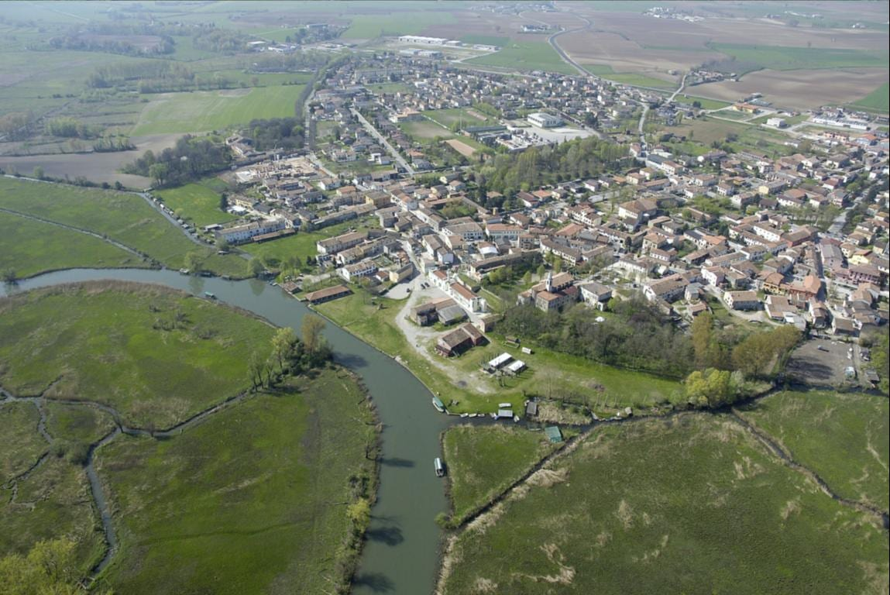
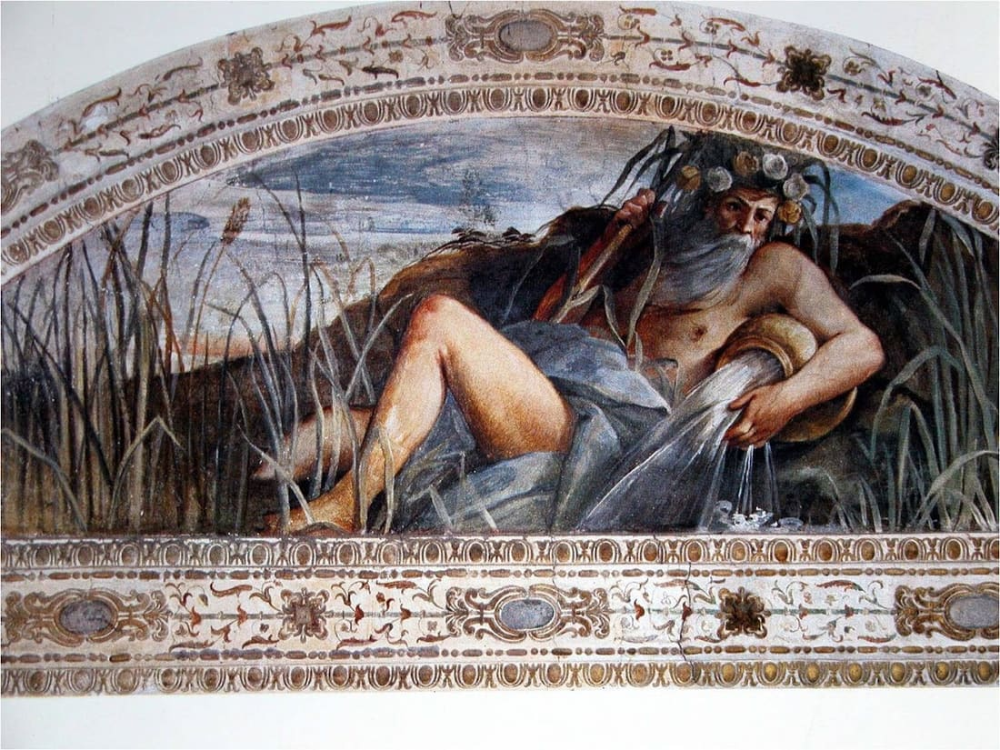
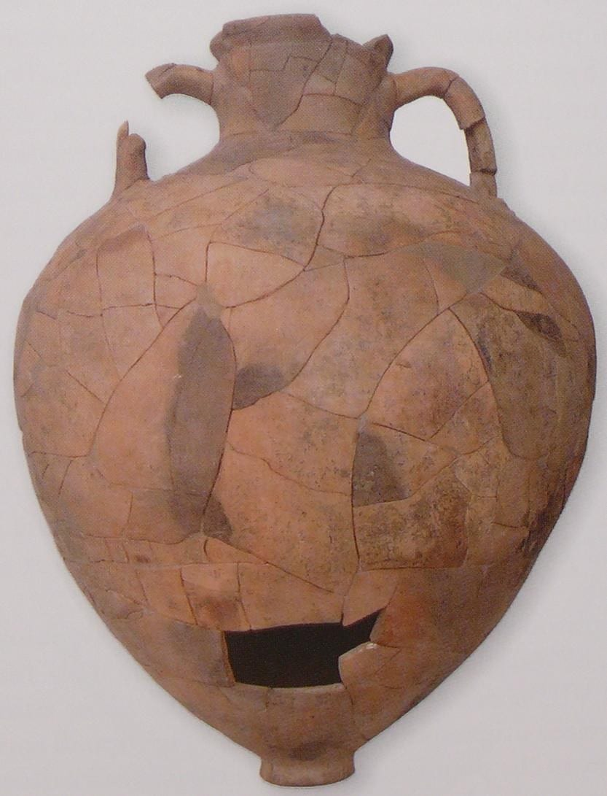
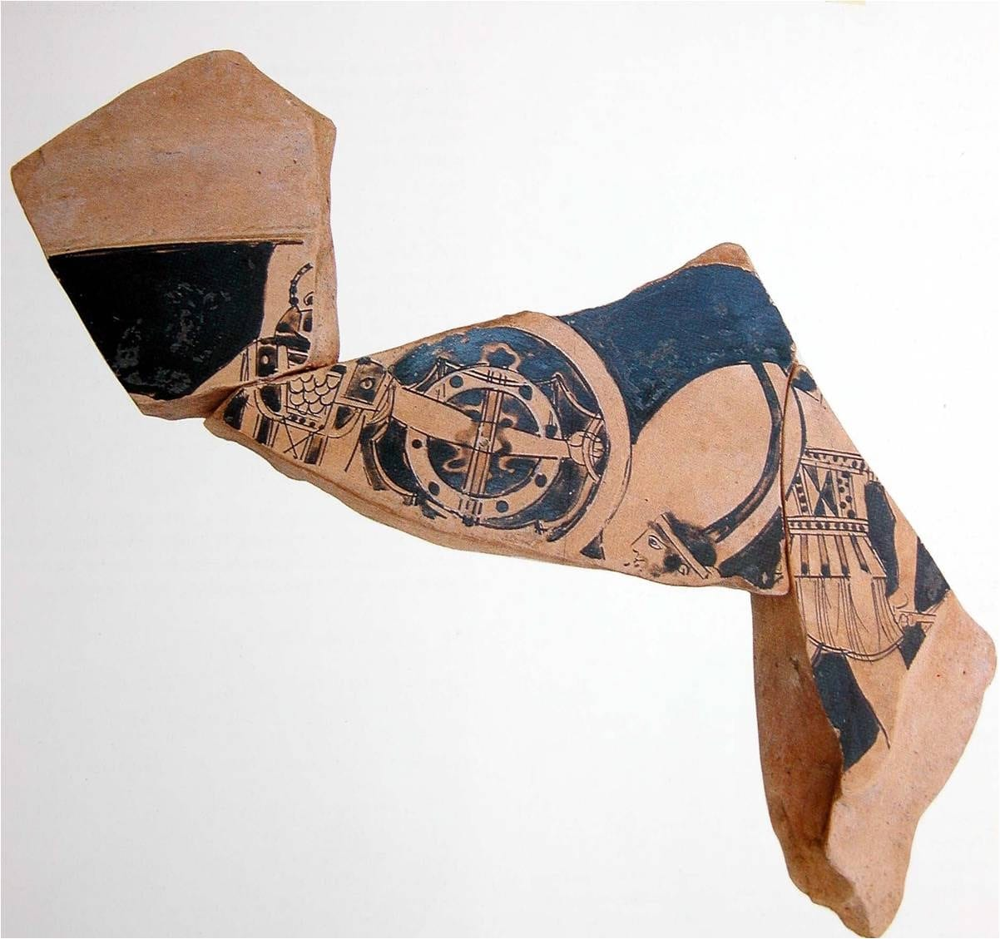
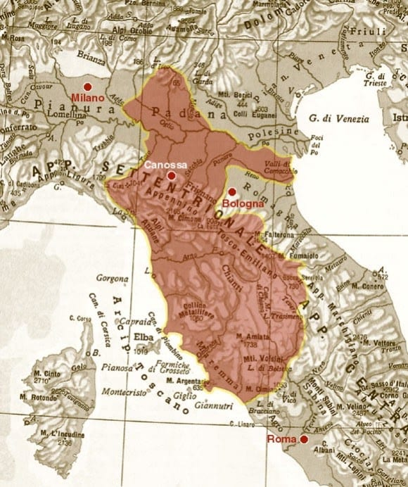
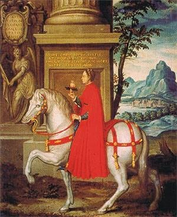
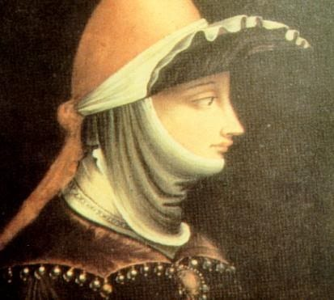
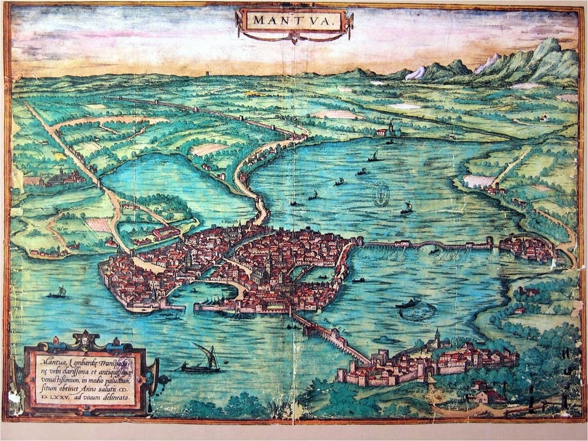
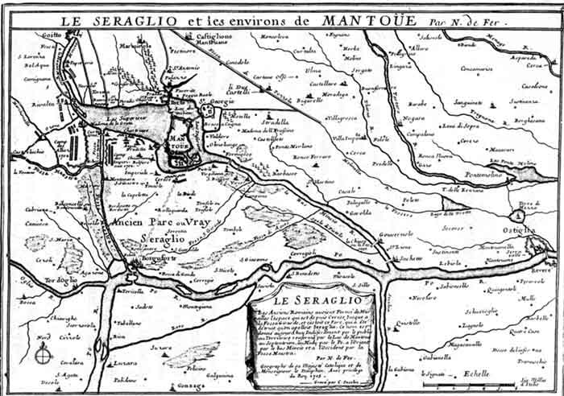

Storia di Rivalta
Per un secolo Rivalta non è stata un villaggio di pescatori: era una città fortificata con un porto, un castello e la corte di Matilde di Canossa. Poi il castello è stato raso al suolo, l'acqua si è presa i campi e il paese ha dovuto inventarsi un altro mestiere — quello della valle.
Il fiume e la riva alta

Perché proprio qui
Rivalta sta lungo il Mincio, dove il fiume si adagia in un'ampia ansa a nord-ovest di Mantova, poco sotto la strada che porta a Brescia. Oggi è una frazione di Rodigo, a cinque chilometri dal capoluogo comunale, e negli ultimi secoli è stata soprattutto un villaggio di pescatori. Ma non è sempre stata questa cosa qui.
Il nome dice già tutto: la riva più alta del fiume. Un terrazzo asciutto in mezzo a una pianura che asciutta non era, e da cui si vede — e si controlla — l'acqua che passa. Sin dall'antichità i fiumi sono stati i posti dove conveniva abitare: alla vita dei campi aggiungevano la pesca e i commerci, e le vie d'acqua erano molto più sicure delle piste che si infilavano nelle selve della pianura padana. In cambio si accettava di essere esondati ogni tanto.
Mantova ne è l'esempio più vicino: fondata dagli Etruschi, prende il nome dalla divinità Mantus; passa sotto i Celti Cenomani verso il 200 a.C., ha un suo ruolo nelle guerre fra Romani e Galli e nel 41 a.C. diventa colonia dei veterani di Cesare — e la nuova distribuzione delle terre colpisce i modesti possedimenti di Virgilio, nato ad Andes, poco fuori città.

Quello che è rimasto sottoterra
Nell'antichità ci si spostava tenendo d'occhio ciò che non cambia: fiumi, laghi, catene montuose. Lungo quegli itinerari — molti dei quali si percorrono ancora oggi — non viaggiavano solo persone e merci, ma idee, tecniche e tradizioni. È per questo che qui intorno si trovano oggetti nati a migliaia di chilometri di distanza: ambra delle coste baltiche, recipienti simili a quelli delle popolazioni del Danubio, vasellame di produzione attica.
Nelle torbiere presso il paese sono emersi numerosi manufatti neolitici, tombe galliche e romane, resti di costruzioni che ogni tanto un'aratura profonda riporta a galla. Il ritrovamento più significativo è del 1905: una necropoli etrusca a Colle Fiorito, a circa due chilometri da Rivalta lungo la strada per Goito.


Il Mincio come strada
Il Mincio è parte a pieno titolo del sistema viario dell'antica Lombardia orientale: collega il Po (Padus) al lago di Garda (lacus Benacus) e permette di raggiungere la via Postumia e la via Gallica. Ai tempi dei primi Romani, però, non sfociava nel Po vicino a Governolo come fa adesso: si univa al Tartaro attraverso immense paludi. Secondo la tradizione fu il senatore Quinto Curio Ostiglio che, per ordine del Senato, ne fece cambiare il corso e prosciugò le paludi per costruirvi la via Ostiglia, nel 189 a.C.
Ripalta: il porto, il castello, il quartiere
L'antica Ripalta, posta sopra il terrazzo fluviale, viene scelta come luogo strategico per il controllo del Mincio. Le strutture murarie, stando alle fonti locali, risalivano le rive del fiume fino a Sette Frati, dove sorgeva un ospedale in cui si curavano gli ammalati di malaria. Nel 1159 Federico I dichiarò di non riconoscere alcun feudo ecclesiastico che non fosse approvato per sanzione imperiale — sanzione che poi si negava sempre: l'ospitale fu perciò laicizzato, e nel 1170 lo si vedeva ancora in Corte Sette Frati.
Si racconta anche di un lungo sotterraneo che dal porto di Rivalta, dove era ormeggiata la flotta della contessa Matilde, arrivava fino ai confini del territorio: a Corte Vedusino e a Corte Pilone.
Dove finiva Rivalta
Il «quartiere» rivaltese confinava verso Rodigo con Corte Catenaccio, verso Goito con la Corte Sette Frati e il fiumicello Goldone, in direzione di Mantova con il fiumicello Osone, dove — presso il ponte Reverso — esisteva una chiesetta.
E intanto nasce Rodigo
Rodigo, oggi sede comunale, ha origine come colonia attorno all'anno Mille e un'etimologia incerta. Don Giacomo Capitanio, parroco di fine Ottocento e autore della Cronistoria del paese, la fa derivare dal nome del fondatore Roto: forse un cortigiano, forse un compratore di boschi, forse un arimanno — un «tirannello» legato ai Marchesi di Canossa di Mantova.
Rivalta, la quale da secoli è semplice frazione del Comune, era allora popolosa molto, e Rodigo venne fondato solamente quando le frequenti inondazioni del Mincio, lasciando acque stagnanti e malaria, la disertarono in gran parte e la fecero ritirare dalle sponde straripanti. Rivalta però rimase sempre la Chiesa Matrice, oggi ancora Forania.
Don Giacomo Capitanio, Rodigo — Cronistoria (1050-1866), scritta attorno al 1900. «Forania» indica la chiesa principale del comprensorio, fuori città.
L'età di Matilde
Per un secolo Rivalta non è un villaggio del contado: è la porta nord di uno degli stati più potenti d'Europa.
Nell'archivio parrocchiale di Rivalta — oggi custodito nell'archivio diocesano — ci sono citazioni che risalgono al 1020 e a un breve pontificio che nel 1047 conferiva all'arciprete privilegi speciali e sacerdoti per un culto decoroso. Nel 1167 il vicino Castellucchio, oggi comune a sé, doveva ancora le decime all'arciprete di Rivalta.
Il territorio era dei Canossa, famiglia di origine lucchese che dagli imperatori di Germania aveva avuto, verso il 962, il governo di Mantova e dei luoghi all'intorno. Estesero il dominio all'Appennino tosco-emiliano e poi a Mantova, facendone la capitale di un marchesato più potente di un regno; il momento più solido arriva nel 1027, quando Bonifacio è nominato duca di Toscana con decreto imperiale.
Matilde, nata nel 1046, si trovò presto a guidare uno stato che andava dalla Toscana alla Lombardia passando per l'Emilia. Mantova ne era la capitale per bellezza e importanza, ma soprattutto per ragioni strategiche: era già una città-fortezza, e la sua difesa dipendeva da due presidi sull'acqua. A sud il castello di Governolo; a nord il castello di Rivalta, che garantiva il controllo del fiume e quindi degli approvvigionamenti.
Rivalta fu anche residenza della contessa. Un documento del 1110 la definisce «in burgo civitatis Ripaltae». La tradizione locale ha conservato a lungo la memoria di una cameretta della casa parrocchiale dove abitò Sant'Anselmo, patrono di Mantova: difensore dei diritti della Chiesa e consigliere spirituale di Matilde, poi vescovo di Lucca, e di nuovo alla corte dei Canossa negli ultimi anni di vita, passati in gran parte qui.



Prosciugare, arginare, dissodare
Con i Canossa il Mantovano conosce una spinta forte alla bonifica. I monaci benedettini dell'abbazia di Goito, mentre diffondevano la fede, insegnavano ai coloni «a rasciugar paludi, stagni e lagune; arginare acque, abbattere foreste, ridurre a coltura sodaglie e vegri». La sera, finito il lavoro, ci si ritirava tutti insieme nei grandi cascinali di campagna, per difendersi dalle fiere e dagli assassini.
L'assedio del 1091
Nella sua terza discesa in Italia Enrico IV pose l'assedio a Mantova. Durò undici mesi e finì con il tradimento della città; nel frattempo caddero anche Rivalta e la torre di Governolo. Il racconto è di Donizone, il monaco che scrisse la vita di Matilde mentre lei era ancora viva.
Alla predetta signora rimaneva una città particolarmente cara, che da antichissimo tempo si chiamava Mantova, città assai ricca e prestigiosa. Il re, desideroso di prenderla, fissò gli attendamenti attorno ad essa; dal canto suo la nobile e forte Matilde, acuta guida, la riempì di guerrieri scelti e di vettovaglie […] Mantova era ben protetta, e il Re era attestato lontano, ma sui cittadini incombeva l'assedio già da undici mesi. Frattanto, si consegnavano alle truppe del Re Rivalta e la Torre di Governolo […] Nell'anno 1091 mostrasti la tua bassezza, o Mantova, e ti degradasti nel tradimento […] Fu così restituita alla Signora anche la Torre di Governolo, ricca di molte provviste e di beni del re, e non molto tempo dopo le fu riconquistata Rivalta.
Donizone, Vita Mathildis — codice originario del 1115, nella traduzione di G. Manzi e U. Bellocchi.
Il castello raso al suolo
Il potere canossiano, già stretto fra papato e impero, viene eroso dal peso crescente dei vescovi e dei cittadini di Mantova, che come altre città aspirano a liberarsi dei legami feudali. Nel 1114, alla notizia — infondata — della morte di Matilde, i mantovani si ribellano. Puntano subito al simbolo del suo potere: assediano il castello di Rivalta, patteggiano con il suo signore per averne le difese e, una volta entrati, lo danno alle fiamme, ne demoliscono le torri e portano a Mantova per via fluviale le pietre, in segno di vittoria.
[…] dipoi avendo inteso (i Mantovani) che la Contessa trovavasi gravemente inferma e pressoché moribonda in Montebarazone sul Modenese, profittò di tal circostanza per meglio opporsi alle sue mire. S'impossessarono quasi subito i Mantovani di Rivalta sul Mincio, e ne distrussero il Castello, onde togliere ad essa o a' suoi aderenti uno de' mezzi più forti per costringerli alla resa della Città […] Saputosi da Matilde un tanto eccesso, adunò prontamente le sue milizie; fece armare gran quantità di barche sul Po; e venne, poiché fu risanata, a porre in persona l'assedio alla Città, stringendola per terra e per acqua […] e nel giorno 31 di ottobre fece Matilde il solenne suo ingresso in Mantova fra le acclamazioni ed il plauso universale de' Cittadini.
Passo riportato dalla fonte parrocchiale; sull'attribuzione, vedi le note sulle fonti.
Matilde, ritirata nel monastero di San Benedetto Polirone, muore l'anno successivo: 25 luglio 1115, a Bondeno di Roncore. Con lei finisce il ruolo militare di Rivalta. Nel 1116 l'imperatore, sceso di nuovo in Italia, si trova a Governolo il 6 maggio, conferma ai mantovani i loro privilegi e dona loro il castello di Rivalta, permettendo che il palazzo — già sede dei suoi augusti antecessori — venga smontato e trapiantato nel borgo di San Giovanni Evangelista, fuori città. È quello stesso diploma a dirci una cosa che il paesaggio di oggi non lascia più intuire: Rivalta era un'isola, attorniata dalle acque del Mincio, e questo la rendeva un posto di qualche importanza per la difesa di Mantova.
Poi arrivano gli anni difficili: un terremoto in Lombardia nel 1117 e una piena rovinosa lungo l'alveo del Mincio. «Molti perirono al di fuori affogati nell'acque, e si perdette gran quantità di bestiame. Una parte de' Cittadini fu ancor costretta ad abbandonare le proprie case rifugiandosi in luoghi eminenti; e la maggior parte si trasportò ad abitare i piani superiori per qualche tempo, sinché i fiumi nel loro alveo si ritirarono.»
Rivalta entra lentamente in decadenza, e al suo posto cresce il borgo di Rodigo, che diventerà capoluogo e avrà uno stemma proprio. Il titolo, però, resiste alle cose: in un rogito del 1190 il paese è ancora civitas Ripaltae.
Del castello non resta niente in elevato: la chiesa dei Santi Vigilio e Donato sorge dove stava, e nel terreno restano tracce del fossato. Il resto delle memorie del paese è in monumenti e memorie.
Come è nata la valle
La palude di Rivalta non è un residuo naturale: è la conseguenza, a monte, di un'opera fatta per difendere Mantova.
Attorno al 1190 Alberto Pitentino progetta e realizza le dighe che daranno origine ai laghi di Mantova. In particolare la costruzione del ponte dei Mulini forma il lago Superiore e allaga le terre a monte, fin sopra Rivalta. Quelle grandi praterie — circa 2.000 ettari — diventano in poco tempo palude, e prendono l'aspetto che conosciamo oggi: «la val».
Al signore di Rivalta, per il danno della terra coltivabile perduta, viene riconosciuta la rendita di un quarto dei cespiti comunali derivanti dal dazio del ponte dei Mulini. L'opera di difesa iniziata da Pitentino si completa nel XIII secolo con la chiusura del Serraglio: l'incanalamento di molti scoli e corsi d'acqua nell'avvallamento fra il lago Superiore e il Po.


È da qui che Rivalta smette di somigliare agli altri paesi della pianura padana. Dal Duecento in avanti la sua economia non è più agricola, ma interamente incentrata sul fiume e sulla palude. L'attività che si afferma per prima è la pesca: già nel tredicesimo secolo i documenti parlano di Arte della Pesca, disciplinata da concessioni e regolamenti.
Quelle stesse acque sono la Riserva Naturale Valli del Mincio: cosa ci vive e come si visita sta in natura.
I mestieri dell'acqua
Nel corso dei secoli i rivaltesi imparano anche a coltivare la valle: a raccogliere in grande quantità la canna e il carice, sempre più richiesti. Un'apparente sciagura — l'impaludamento dei campi — diventa così un'opportunità e una ricchezza. E poiché l'economia non dipendeva solo dalla terra, qui si lavorava anche d'inverno, quando il contadino è invece costretto a fermarsi.
Il lavoro era distribuito in modo abbastanza omogeneo fra uomini e donne, e occupava gran parte della popolazione attiva: gli uomini alla pesca o alla raccolta di canna e carice, le donne alla costruzione delle reti e delle arelle, i graticci di canne legate. Erano braccianti e operaie, in un ambiente durissimo: si pativa il freddo e l'umidità, e ci si ammalava di tetano, malaria e leptospirosi.
Per i pescatori la vita era altrettanto dura, ma aveva qualcosa di epico. Molti lo erano da generazioni: nel 1746, fra i pescatori di Rivalta, figurano già dei Marsili e dei Draghi. Gli ultimi sono scesi sul fiume ogni giorno fino a oltre ottant'anni.
Un paese in numeri, fino a pochi decenni fa
| Mestiere | Quanti | Nota |
|---|---|---|
| Pescatori | ~30 | molti da più generazioni |
| Raccoglitori di canna | ~30 | canna e carice, anche d'inverno |
| Operai e operaie | ~100 | reti e arelle, soprattutto donne |
Ordini di grandezza riferiti dalle fonti locali, non un censimento.
Quello che c'era attorno
È documentato uno sciopero di operaie — oltre un centinaio di donne — sul finire del secolo. Nello stesso periodo a Rivalta c'erano diverse trattorie, numerose botteghe artigiane (comprese quelle dei calafati, i galafàs, che costruivano le barche) e due teatri. Ci fu la fermata del treno, poi il tram, infine le corriere. Ci fu una filanda, poi trasformata in laboratorio per la produzione di arelle e da tempo chiusa.
Ci furono, e ci sono ancora, cave di sabbia e ghiaia: nel dopoguerra il trasporto passava ancora dal fiume. Erano in funzione due vaporetti, Angelo e Italia, che facevano da rimorchiatori: ognuno trascinava sei grosse chiatte cariche di ghiaia, su due file di tre. Si caricava al Geròt, alla Feradina — una ferrata, cioè i binari che partivano dalle cave e arrivavano dritti all'attracco — e a Rivalta, dove c'era un approdo simile.
La valle ha dettato lavori, mestieri e tradizioni: una cultura diversa da quella dei paesi vicini, e un po' di prosperità in più. Nel dialetto il fiume è rimasto semplicemente «al Mens», e la palude «la val». Gli attrezzi, le barche e i gesti di quei mestieri si vedono oggi al Museo Etnografico dei Mestieri del Fiume.
La chiesa dei Santi Vigilio e Donato
La parrocchiale è dedicata ai santi Donato e Vigilio, vescovi e martiri, raffigurati in due dipinti posti nell'abside ai lati dell'altare maggiore; al centro c'è la Madonna.
L'edificio è in stile «di transizione» dal barocco al neoclassico e risale al 1750. Non è il primo: è stato costruito sopra un tempio precedente, ormai insufficiente per la comunità, al quale si ritiene appartengano il presbiterio e l'abside, di fattura diversa e più antica rispetto al resto della chiesa.
Sorge dove stava il castello di Matilde: è il punto in cui le due storie di questa pagina, quella militare e quella religiosa, si sovrappongono materialmente. Le altre chiese e cappelle del paese sono elencate in luoghi di culto.
Cronologia
Le date citate in questa pagina, nell'ordine in cui sono avvenute.
- 189 a.C. Per tradizione il senatore Quinto Curio Ostiglio fa cambiare corso al Mincio e prosciuga le paludi per costruirvi la via Ostiglia.
- 41 a.C. Mantova diventa colonia dei veterani di Cesare.
- ~962 I Canossa ricevono dagli imperatori di Germania il governo di Mantova e del territorio attorno.
- 1020 La citazione più antica conservata nell'archivio della parrocchia.
- 1027 Bonifacio di Canossa è nominato duca di Toscana.
- 1046 Nasce Matilde di Canossa.
- 1047 Un breve pontificio conferisce all'arciprete di Rivalta privilegi speciali e sacerdoti.
- 1091 Dopo undici mesi d'assedio Mantova cade; con lei Rivalta e la torre di Governolo. Poco dopo Matilde le riconquista.
- 1110 Un documento parla del paese come «burgo civitatis Ripaltae».
- 1114 I mantovani assediano e distruggono il castello: le pietre vanno a Mantova per via fluviale. Matilde riprende la città il 31 ottobre.
- 1115 Il 25 luglio Matilde muore a Bondeno di Roncore.
- 1116 Il 6 maggio, a Governolo, l'imperatore dona ai mantovani il castello di Rivalta. Il diploma descrive Rivalta come un'isola cinta dal Mincio.
- 1117 Terremoto in Lombardia e piena rovinosa lungo l'alveo del Mincio.
- 1159 Il decreto di Federico I porta alla laicizzazione dell'ospitale di Sette Frati.
- 1167 Castellucchio deve ancora le decime all'arciprete di Rivalta.
- ~1190 Alberto Pitentino costruisce le dighe e il ponte dei Mulini: nascono i laghi, e a monte l'acqua si prende circa 2.000 ettari di campi. Nello stesso anno un rogito chiama ancora il paese civitas Ripaltae.
- XIII sec. Chiusura del Serraglio. I documenti citano l'Arte della Pesca.
- 1746 Fra i pescatori di Rivalta compaiono i cognomi Marsili e Draghi.
- 1750 Viene costruita l'attuale chiesa dei Santi Vigilio e Donato, sopra un tempio più antico.
- 1905 Scoperta della necropoli etrusca di Colle Fiorito, a due chilometri dal paese.
Da dove viene questa pagina
Il testo rielabora uno studio di F. Severi pubblicato dalle parrocchie di Rivalta e Rodigo, che a sua volta si appoggia a queste fonti:
- Don Giacomo Capitanio, Rodigo — Cronistoria (1050-1866), scritta verso il 1900.
- Aristide Cauzzi, Rivalta matildica e la nascita della palude, in Rodigo: tre centri, una comunità.
- Donizone, Vita Mathildis (1115), nella traduzione di G. Manzi e U. Bellocchi.
Da lì vengono anche le immagini, tenute qui in copia invece che richiamate da altri siti. Dove l'opera ha un nome — l'affresco della Sala dei Fiumi, la veduta di Braun e Hogenberg, la carta di Nicolas de Fer — sta scritto sotto la figura.
Per correzioni, aggiunte o segnalazioni su questa pagina: pzkko@yahoo.com.
Sono incongruenze della fonte: lasciate visibili invece che corrette in silenzio.
Il breve del 1047. La fonte lo attribuisce a «papa Clemente III», ma nel 1047 regnava Clemente II; Clemente III è l'antipapa del 1080-1100.
L'imperatore del 1116. Il diploma di Governolo è di Enrico V: Enrico IV, quello dell'assedio del 1091, era morto nel 1106.
La citazione del 1114. La fonte la attribuisce a Donizone, Storia di Mantova, libro secondo. Per lingua e impianto sembra però un passo di cronaca sette-ottocentesca — verosimilmente il Compendio di Leopoldo Camillo Volta — e non la Vita Mathildis.
Lo sciopero delle operaie. La fonte dice «sul finire del secolo scorso» senza dire quale: a seconda di quando è stato scritto lo studio, è fine Ottocento o fine Novecento.
L'anagrafica del paese, i dati ISTAT, i monumenti e i luoghi di culto stanno in Il paese; il metodo e le fonti del resto del dossier in Dati e fonti.